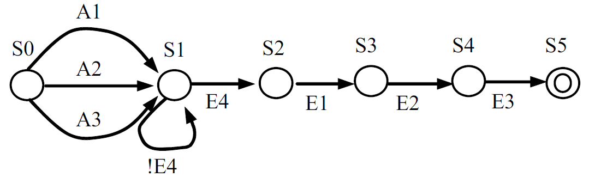
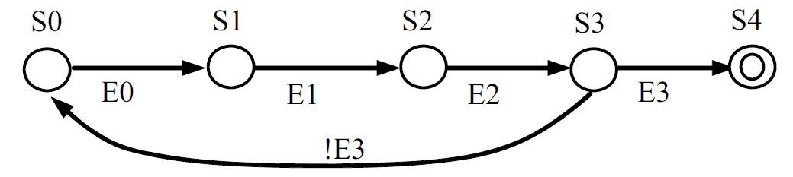

Theory of Computations
Applications in Network Security
Created By:
Pankaj Kumar
Roll No: UE158072
Prashant Ravi
Roll No: UE158075
Raman Maurya
Roll No: UE158083
Submitted To:
Dr. Yogita
What's Our Topic?
We are going to explain how Theory of Computations is applicable in Network Security. Particularly use of Definite Finite Automata in making Network Attacks like DOS.
Why there is a need of network security?
Any computer connected to a computing network is potentially vulnerable to an attack. An "Attack" is the exploitation of a flaw in a computing system (operating system, software program or user system) for purposes that are not known by the system operator and that are generally harmful. Attacks are always taking place on the internet, at a rate of several attacks per minute on each connected machine. These attacks are mostly launched automatically from infected machines (by viruses, Trojan horses, worms, etc.) without their owner's knowledge. In rarer cases, they are launched by computer hackers.
Introduction
What is DOS Attack?
A denial-of-service attack is a security event that occurs when an attacker takes action that prevents legitimate users from accessing targeted computer systems, devices or other network resources. Denial-of-service (DoS) attacks typically flood servers, systems or networks with traffic in order to overwhelm the victim resources and make it difficult or impossible for legitimate users to use them.
Prerequisites to Know first
Finite Automata/Finite State Machine
In general, a state machine is any device that stores the status of something at a given time and can operate on input to change the status and/or cause an action or output to take place for any given change. A computer is basically a state machine and each machine instruction is input that changes one or more states and may cause other actions to take place.
A finite state machine is one that has a limited or finite number of possible states. (An infinite state machine can be conceived but is not practical.) A finite state machine can be used both as a development tool for approaching and solving problems and as a formal way of describing the solution for later developers and system maintainers.
In a nutshell, Finite Automata/State Machine is:
- A set of input events
- A set of output events
- A set of states
- A function that maps states and input to output
- A function that maps states and inputs to states (which is called a state transition function)
- A description of the initial state
Deterministic Finite Automaton (DFA)
In DFA, for each input symbol, one can determine the state to which the machine will move. Hence, it is called Deterministic Automaton. As it has a finite number of states, the machine is called Deterministic Finite Machine or Deterministic Finite Automaton.
Formal Definition of a DFA
A DFA can be represented by a 5-tuple (Q, ∑, δ, q0, F) where −
- Q is a finite set of states.
- ∑ is a finite set of symbols called the alphabet.
- δ is the transition function where δ: Q × ∑ → Q
- q0 is the initial state from where any input is processed (q0 ∈ Q).
- F is a set of final state/states of Q (F ⊆ Q).
Graphical Representation

How TCP/IP works?
- Three Way Handshake
- A client node sends a SYN data packet over an IP network to a server on the same or an external network. The objective of this packet is to ask/infer if the server is open for new connections.
- The target server must have open ports that can accept and initiate new connections. When the server receives the SYN packet from the client node, it responds and returns a confirmation receipt – the ACK packet or SYN/ACK packet.
- The client node receives the SYN/ACK from the server and responds with an ACK packet.
- But what if client node doesn't respond?
Three Way Handshake-DFA
So how many types of DOS attacks are there?
A lot. So let's see few of them:
IP Spoofing
IP Spoofing is a technique used to gain unauthorized access to machines, whereby an attacker illicitly impersonate another machine by manipulating IP packets. IP Spoofing involves modifying the packet header with a forged (spoofed) source IP address, a checksum, and the order value. Internet is a packet switched network, which causes the packets leaving one machine may be arriving at the destination machine in different order. The receiving machine resembles the message based on the order value embedded in the IP header. IP spoofing involves solving the algorithm that is used to select the order sent values, and to modify them correctly.
IP Spoofing-DFA
UDP Flooding
A UDP flood, by definition, is any DDoS attack that floods a target with User Datagram Protocol (UDP) packets. The goal of the attack is to flood random ports on a remote host. This causes the host to repeatedly check for the application listening at that port, and (when no application is found) reply with an ICMP ‘Destination Unreachable’ packet. This process saps host resources, which can ultimately lead to inaccessibility.
SYN Flooding- Our area of work
A SYN flood DDoS attack exploits a known weakness in the TCP connection sequence (the “three-way handshake”), wherein a SYN request to initiate a TCP connection with a host must be answered by a SYN-ACK response from that host, and then confirmed by an ACK response from the requester. In a SYN flood scenario, the requester sends multiple SYN requests, but either does not respond to the host’s SYN-ACK response, or sends the SYN requests from a spoofed IP address. Either way, the host system continues to wait for acknowledgement for each of the requests, binding resources until no new connections can be made, and ultimately resulting in denial of service.
SYN Flooding-DFA
So this is how we can implement TOC in understanding various Network Attacks.